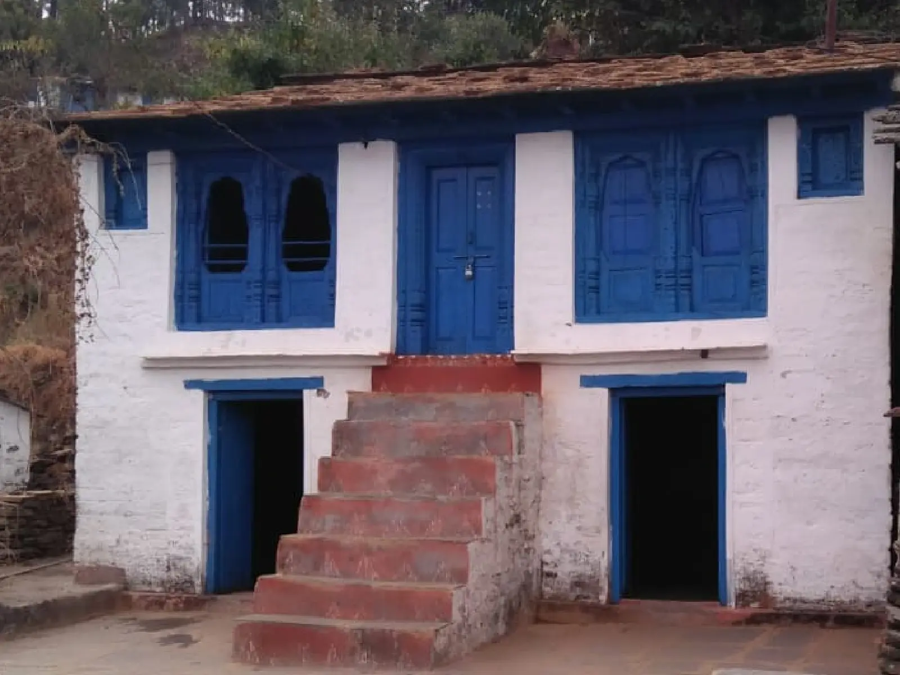

Loading...
“If you want to see the modernization move to city but if you want to see the culture move to village”
Experience the authentic charm of the Himalayan foothills with our immersive village walk tour. Discover breathtaking landscapes and connect with local culture in ways you never imagined.
Our heritage homestays blend traditional architecture with modern amenities, offering you the perfect balance of authentic experience and comfort. Whether you prefer a cozy camp under the stars or a warm village house, we have options to suit every traveler.
Why Choose Our Village Walk?
Unlike typical tours, our village walk offers genuine cultural immersion. You're not just a tourist - you become part of the community, sharing meals, stories, and experiences
with local families.
Experience authentic Himalayan hospitality in our carefully selected homestays that offer a perfect blend of traditional charm and modern comfort.
Each homestay is nestled in serene surroundings, surrounded by alpine and oak forests. Despite their traditional exterior, the interiors are thoughtfully designed to provide all the comfort you need after a day of exploration.
Peaceful Settings
Enjoy tranquil moments on your private balcony or courtyard, taking in stunning views of the Himalayan foothills while sipping local tea.
Our village walk offers a rich blend of cultural immersion, spiritual exploration, and natural beauty. Each day brings new discoveries and authentic experiences.
Whether you're seeking spiritual enlightenment, cultural connection, or natural beauty, our village walk provides a perfect balance of all three. Each day offers something unique while maintaining the authentic charm of village life in the Himalayas.
Arrival: Guests arrive in Almora from their respective locations.
Welcome Point: Meet at Pailaag Café & Restaurant, a cozy spot offering a beautiful valley view and a clear sight of the Kasar Devi Temple.
Experience: Relax, enjoy local refreshments, and soak in the panoramic views as a warm introduction to the region.
Stay Options:
Morning Visit: Start the day with a visit to the sacred Kasar Devi Temple, a meditation hub uniquely situated on the Van Allen Belt, believed to radiate cosmic energy.
Scenic Views: Witness magnificent vistas of Nanda Devi Peak and Trishul Parvat.
Walk Route & Highlights:
Arrival at Deora: Reach Deora village by evening.
Stay: Overnight at a Pahadi-style village house, with bonfire, barbecue, and local music under the stars.
Morning in Deora: Enjoy a wholesome breakfast in the village house, with magnificent Himalayan views.
Scenic Walk: Begin your trek towards Dhaulchina, passing forest trails, terraced fields, and rustic villages.
Riverside Lunch: Pause for a riverside picnic lunch, with music to add a festive touch.
Arrival at Dhaulchina: By evening, arrive at the peaceful village of Dhaulchina.
Stay: Overnight in a traditional village house, enjoying local cuisine and hospitality.
Morning – Breakfast in Dhaulchina Village
Begin your day with a traditional breakfast at a warm village home in Dhaulchina, surrounded by serene Himalayan views.
Vimalkot Temple (Shakti Peeth, 3 km trek)
Start your journey with a scenic trek to the sacred Vimalkot Temple, a revered Shakti Peeth. From here, enjoy a breathtaking 360° panorama of the Kumaon
Himalayas, oak, and pine-clad forests.
Kumaon Himalaya Viewpoint (4 km)
Proceed to the Kumaon Himalaya viewpoint, offering majestic vistas of the Himalayan peaks and lush valleys below.
Vriddha Jageshwar Trek (3 km)
Continue with a picturesque trek through enchanting mountain trails to reach Vriddha Jageshwar Temple, an ancient shrine dedicated to Lord Shiva.
Jageshwar Dham (4 km via Deodar Forest)
From Vriddha Jageshwar, descend through dense deodar forests towards the famed Jageshwar Dham—a spiritual complex of more than 100 historic stone temples,
steeped in myth and divinity.
Birdwatching & Himalayan Views
Pause to spot local Himalayan bird species while soaking in the tranquil mountain scenery.
Lunch by Dhandeshwar River
Relish a picnic lunch by the Dhandeshwar River viewpoint, accompanied by soft music and light activities, making it a rejuvenating mid-day break.
Evening – Kana Village Experience
Return to Kana village house for an immersive evening—bonfire, barbecue, and live music night—ending the day with warmth, flavors, and cultural vibes.
Option 1 – Return Journey
After breakfast at Kana village house, bid farewell to the serene Himalayan villages. Drive back towards your onward destination with beautiful memories of mountain treks,
riverside lunches, and village life.
Option 2 – Continue the Adventure
For those who wish to extend their stay, embark on a trek to a high-altitude camping site. Settle into tents under the starlit sky, surrounded by untouched wilderness,
offering a raw Himalayan experience of peace, adventure, and nature.
The best time for a village walk in Kumaon is from March to June and September to December when the weather is pleasant and the skies are clear for mountain views.
We provide authentic Pahadi homestays with traditional architecture and modern amenities. You can also choose camping options for a more adventurous experience.
The village walk is moderately challenging with 4-5 hours of walking per day. A basic level of fitness is recommended, and we can customize the itinerary based on your capabilities.
Pack comfortable trekking shoes, warm clothes, raincoat, personal toiletries, and any personal medications. A detailed packing list will be provided after booking.
All meals are included except for breakfast and lunch on the first day and lunch and dinner on the last day. We serve delicious local cuisine made with regional ingredients.
Yes, our village walk is fully customizable. You can adjust the duration, add or remove villages, and modify activities based on your interests and preferences.
Book your journey or get in touch with our team for more information


{kind=link}
{kind=link}
{kind=link}
{kind=link}
{kind=link}
{kind=link}
{kind=link}
{kind=link}